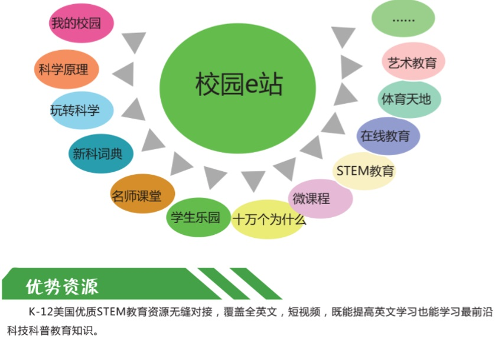
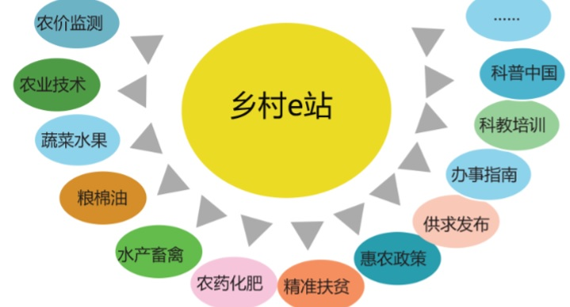
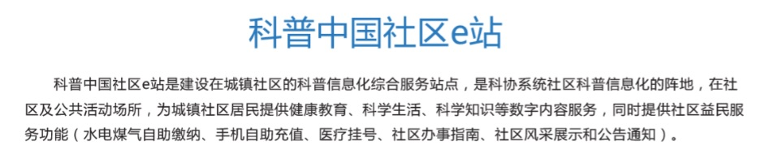

<!DOCTYPE html>
<html>
<head><meta name="generator" content="Hexo 3.8.0">
  <meta charset="utf-8">
  

  
  <title>科普e站概述和分类介绍 | Hexo</title>
  <meta name="viewport" content="width=device-width, initial-scale=1, maximum-scale=1">
  <meta name="description" content="返回首页   建站背景为深入贯彻国家《全民科学素质行动计划纲要实施方案（2016—2020 年）》 和国家“科技三会”精神，创新科普精准化服务模式，提升科学普及效能，切实 解决科学传播“最后一公里”的问题，2016 年，中国科协提出了建立社区科普 e 站的目标任务。2016 年，中国科协、文化部共同发起了“科普文化进万家” 活动，要求各地推进“科普中国”乡村e站、社区e站建设。基本定义科普中国e">
<meta property="og:type" content="article">
<meta property="og:title" content="科普e站概述和分类介绍">
<meta property="og:url" content="https://github.com/linuxpy/github.io/2019/01/08/科普e站概述和分类介绍/index.html">
<meta property="og:site_name" content="Hexo">
<meta property="og:description" content="返回首页   建站背景为深入贯彻国家《全民科学素质行动计划纲要实施方案（2016—2020 年）》 和国家“科技三会”精神，创新科普精准化服务模式，提升科学普及效能，切实 解决科学传播“最后一公里”的问题，2016 年，中国科协提出了建立社区科普 e 站的目标任务。2016 年，中国科协、文化部共同发起了“科普文化进万家” 活动，要求各地推进“科普中国”乡村e站、社区e站建设。基本定义科普中国e">
<meta property="og:locale" content="default">
<meta property="og:image" content="https://github.com/linuxpy/github.io/2019/01/08/科普e站概述和分类介绍/12.jpg">
<meta property="og:image" content="https://github.com/linuxpy/github.io/2019/01/08/科普e站概述和分类介绍/13.jpg">
<meta property="og:image" content="https://github.com/linuxpy/github.io/2019/01/08/科普e站概述和分类介绍/1.jpg">
<meta property="og:image" content="https://github.com/linuxpy/github.io/2019/01/08/科普e站概述和分类介绍/2.jpg">
<meta property="og:image" content="https://github.com/linuxpy/github.io/2019/01/08/科普e站概述和分类介绍/7.jpg">
<meta property="og:image" content="https://github.com/linuxpy/github.io/2019/01/08/科普e站概述和分类介绍/8.jpg">
<meta property="og:updated_time" content="2019-01-14T15:11:22.196Z">
<meta name="twitter:card" content="summary">
<meta name="twitter:title" content="科普e站概述和分类介绍">
<meta name="twitter:description" content="返回首页   建站背景为深入贯彻国家《全民科学素质行动计划纲要实施方案（2016—2020 年）》 和国家“科技三会”精神，创新科普精准化服务模式，提升科学普及效能，切实 解决科学传播“最后一公里”的问题，2016 年，中国科协提出了建立社区科普 e 站的目标任务。2016 年，中国科协、文化部共同发起了“科普文化进万家” 活动，要求各地推进“科普中国”乡村e站、社区e站建设。基本定义科普中国e">
<meta name="twitter:image" content="https://github.com/linuxpy/github.io/2019/01/08/科普e站概述和分类介绍/12.jpg">
  
    <link rel="alternate" href="/github.io/atom.xml" title="Hexo" type="application/atom+xml">
  
  
    <link rel="icon" href="/favicon.png">
  
  
    <link href="//fonts.googleapis.com/css?family=Source+Code+Pro" rel="stylesheet" type="text/css">
  
  <link rel="stylesheet" href="/github.io/css/style.css">
</head>
</html>
<body>
  <div id="container">
    <div id="wrap">
      <header id="header">
  <div id="banner"></div>
  <div id="header-outer" class="outer">
    <div id="header-title" class="inner">
      <h1 id="logo-wrap">
        <a href="/github.io/" id="logo">Hexo</a>
      </h1>
      
    </div>
    <div id="header-inner" class="inner">
      <nav id="main-nav">
        <a id="main-nav-toggle" class="nav-icon"></a>
        
          <a class="main-nav-link" href="/github.io/">Home</a>
        
          <a class="main-nav-link" href="/github.io/archives">Archives</a>
        
      </nav>
      <nav id="sub-nav">
        
          <a id="nav-rss-link" class="nav-icon" href="/github.io/atom.xml" title="RSS Feed"></a>
        
        <a id="nav-search-btn" class="nav-icon" title="Search"></a>
      </nav>
      <div id="search-form-wrap">
        <form action="//google.com/search" method="get" accept-charset="UTF-8" class="search-form"><input type="search" name="q" class="search-form-input" placeholder="Search"><button type="submit" class="search-form-submit">&#xF002;</button><input type="hidden" name="sitesearch" value="https://github.com/linuxpy/github.io"></form>
      </div>
    </div>
  </div>
</header>
      <div class="outer">
        <section id="main"><article id="post-科普e站概述和分类介绍" class="article article-type-post" itemscope="" itemprop="blogPost">
  <div class="article-meta">
    <a href="/github.io/2019/01/08/科普e站概述和分类介绍/" class="article-date">
  <time datetime="2019-01-08T01:29:43.000Z" itemprop="datePublished">2019-01-08</time>
</a>
    
  </div>
  <div class="article-inner">
    
    
      <header class="article-header">
        
  
    <h1 class="article-title" itemprop="name">
      科普e站概述和分类介绍
    </h1>
  

      </header>
    
    <div class="article-entry" itemprop="articleBody">
      
        <blockquote>
<p><a href="https://linuxpy.github.io/github.io/2019/01/12/%E7%A7%91%E6%99%AEe%E7%AB%99%E4%BB%8B%E7%BB%8D%E7%9B%AE%E5%BD%95/" target="_blank" rel="noopener">返回首页</a></p>
</blockquote>
<hr>
<h3 id="建站背景"><a href="#建站背景" class="headerlink" title="建站背景"></a>建站背景</h3><h3 id="为深入贯彻国家《全民科学素质行动计划纲要实施方案（2016—2020-年）》-和国家“科技三会”精神，创新科普精准化服务模式，提升科学普及效能，切实-解决科学传播“最后一公里”的问题，2016-年，中国科协提出了建立社区科普-e-站的目标任务。2016-年，中国科协、文化部共同发起了“科普文化进万家”-活动，要求各地推进“科普中国”乡村e站、社区e站建设。"><a href="#为深入贯彻国家《全民科学素质行动计划纲要实施方案（2016—2020-年）》-和国家“科技三会”精神，创新科普精准化服务模式，提升科学普及效能，切实-解决科学传播“最后一公里”的问题，2016-年，中国科协提出了建立社区科普-e-站的目标任务。2016-年，中国科协、文化部共同发起了“科普文化进万家”-活动，要求各地推进“科普中国”乡村e站、社区e站建设。" class="headerlink" title="为深入贯彻国家《全民科学素质行动计划纲要实施方案（2016—2020 年）》 和国家“科技三会”精神，创新科普精准化服务模式，提升科学普及效能，切实 解决科学传播“最后一公里”的问题，2016 年，中国科协提出了建立社区科普 e 站的目标任务。2016 年，中国科协、文化部共同发起了“科普文化进万家” 活动，要求各地推进“科普中国”乡村e站、社区e站建设。"></a>为深入贯彻国家《全民科学素质行动计划纲要实施方案（2016—2020 年）》 和国家“科技三会”精神，创新科普精准化服务模式，提升科学普及效能，切实 解决科学传播“最后一公里”的问题，2016 年，中国科协提出了建立社区科普 e 站的目标任务。2016 年，中国科协、文化部共同发起了“科普文化进万家” 活动，要求各地推进“科普中国”乡村e站、社区e站建设。</h3><h3 id="基本定义"><a href="#基本定义" class="headerlink" title="基本定义"></a>基本定义</h3><h3 id="科普中国e站是原有科普活动室的信息化升级版，依托已有的网络、阅读终端、活动场所等科普设施，基于科普中国服务云、借助科普中国APP等移动端应用，广泛开展线上线下相结合的科普活动，是实现科普信息服务落地应用的新阵地"><a href="#科普中国e站是原有科普活动室的信息化升级版，依托已有的网络、阅读终端、活动场所等科普设施，基于科普中国服务云、借助科普中国APP等移动端应用，广泛开展线上线下相结合的科普活动，是实现科普信息服务落地应用的新阵地" class="headerlink" title="科普中国e站是原有科普活动室的信息化升级版，依托已有的网络、阅读终端、活动场所等科普设施，基于科普中国服务云、借助科普中国APP等移动端应用，广泛开展线上线下相结合的科普活动，是实现科普信息服务落地应用的新阵地."></a>科普中国e站是原有科普活动室的信息化升级版，依托已有的网络、阅读终端、活动场所等科普设施，基于科普中国服务云、借助科普中国APP等移动端应用，广泛开展线上线下相结合的科普活动，是实现科普信息服务落地应用的新阵地.</h3><h3 id="建设方式"><a href="#建设方式" class="headerlink" title="建设方式"></a>建设方式</h3><h3 id="科普中国e站建设坚持以科普信息落地应用为核心，以县级科协为责任主体，以现有条件为基础，加强与文化、农业、邮政等相关部门通力合作，要与基层的政务服务中心、综合性文化服务中心、党员活动场所，街道社区双创中心、村民委员会、农村专业技术协会等紧密结合，将原有的社区科普益民服务站、农村科普活动站、青少年科学工作室、农村中学科技馆、科技教育特色示范校等采用信息化手段创新升级。"><a href="#科普中国e站建设坚持以科普信息落地应用为核心，以县级科协为责任主体，以现有条件为基础，加强与文化、农业、邮政等相关部门通力合作，要与基层的政务服务中心、综合性文化服务中心、党员活动场所，街道社区双创中心、村民委员会、农村专业技术协会等紧密结合，将原有的社区科普益民服务站、农村科普活动站、青少年科学工作室、农村中学科技馆、科技教育特色示范校等采用信息化手段创新升级。" class="headerlink" title="科普中国e站建设坚持以科普信息落地应用为核心，以县级科协为责任主体，以现有条件为基础，加强与文化、农业、邮政等相关部门通力合作，要与基层的政务服务中心、综合性文化服务中心、党员活动场所，街道社区双创中心、村民委员会、农村专业技术协会等紧密结合，将原有的社区科普益民服务站、农村科普活动站、青少年科学工作室、农村中学科技馆、科技教育特色示范校等采用信息化手段创新升级。"></a>科普中国e站建设坚持以科普信息落地应用为核心，以县级科协为责任主体，以现有条件为基础，加强与文化、农业、邮政等相关部门通力合作，要与基层的政务服务中心、综合性文化服务中心、党员活动场所，街道社区双创中心、村民委员会、农村专业技术协会等紧密结合，将原有的社区科普益民服务站、农村科普活动站、青少年科学工作室、农村中学科技馆、科技教育特色示范校等采用信息化手段创新升级。</h3><h3 id="建设内容"><a href="#建设内容" class="headerlink" title="建设内容"></a>建设内容</h3><h3 id="科普中国e站按照有网络、有人员、有场所、有活动、有终端的“五有”标准开展建设。"><a href="#科普中国e站按照有网络、有人员、有场所、有活动、有终端的“五有”标准开展建设。" class="headerlink" title="科普中国e站按照有网络、有人员、有场所、有活动、有终端的“五有”标准开展建设。"></a>科普中国e站按照有网络、有人员、有场所、有活动、有终端的“五有”标准开展建设。</h3><h3 id="1-有网络：具备满足正常浏览互联网科普内容信息的网络环境和无线网络覆盖。"><a href="#1-有网络：具备满足正常浏览互联网科普内容信息的网络环境和无线网络覆盖。" class="headerlink" title="1.有网络：具备满足正常浏览互联网科普内容信息的网络环境和无线网络覆盖。"></a>1.有网络：具备满足正常浏览互联网科普内容信息的网络环境和无线网络覆盖。</h3><h3 id="2-有人员：拥有一支科普中国信息员队伍，具备满足科普中国e站正常运行的管理和服务工作人员。"><a href="#2-有人员：拥有一支科普中国信息员队伍，具备满足科普中国e站正常运行的管理和服务工作人员。" class="headerlink" title="2.有人员：拥有一支科普中国信息员队伍，具备满足科普中国e站正常运行的管理和服务工作人员。"></a>2.有人员：拥有一支科普中国信息员队伍，具备满足科普中国e站正常运行的管理和服务工作人员。</h3><h3 id="3-有场所：具备满足正常开展线上线下科普活动的场所。"><a href="#3-有场所：具备满足正常开展线上线下科普活动的场所。" class="headerlink" title="3.有场所：具备满足正常开展线上线下科普活动的场所。"></a>3.有场所：具备满足正常开展线上线下科普活动的场所。</h3><h3 id="4-有活动：能够经常性地开展线上线下结合、满足公众需求的科普活动-。"><a href="#4-有活动：能够经常性地开展线上线下结合、满足公众需求的科普活动-。" class="headerlink" title="4.有活动：能够经常性地开展线上线下结合、满足公众需求的科普活动 。"></a>4.有活动：能够经常性地开展线上线下结合、满足公众需求的科普活动 。</h3><h3 id="5-有终端：具备展现科普中国内容信息的阅读（浏览）终端，包括但不限于台式电脑、手机、电子显示屏等。"><a href="#5-有终端：具备展现科普中国内容信息的阅读（浏览）终端，包括但不限于台式电脑、手机、电子显示屏等。" class="headerlink" title="5.有终端：具备展现科普中国内容信息的阅读（浏览）终端，包括但不限于台式电脑、手机、电子显示屏等。"></a>5.有终端：具备展现科普中国内容信息的阅读（浏览）终端，包括但不限于台式电脑、手机、电子显示屏等。</h3><h3 id="科普中国校园e站是面向学校的中小学生、科技教师和科技辅导员，开展青少年科技创新竞赛活动、科普活动、科技教育，以及科技教师和科技辅导员培训等线上线下相结合的校园科普服务的新阵地。"><a href="#科普中国校园e站是面向学校的中小学生、科技教师和科技辅导员，开展青少年科技创新竞赛活动、科普活动、科技教育，以及科技教师和科技辅导员培训等线上线下相结合的校园科普服务的新阵地。" class="headerlink" title="科普中国校园e站是面向学校的中小学生、科技教师和科技辅导员，开展青少年科技创新竞赛活动、科普活动、科技教育，以及科技教师和科技辅导员培训等线上线下相结合的校园科普服务的新阵地。"></a>科普中国校园e站是面向学校的中小学生、科技教师和科技辅导员，开展青少年科技创新竞赛活动、科普活动、科技教育，以及科技教师和科技辅导员培训等线上线下相结合的校园科普服务的新阵地。</h3><h3 id="科普中国乡村e站是面向农村居民，开展科技推广与服务、农村创新创业、购销服务，以及健康生活、科普文化活动等线上线下相结合的农村科普服务的新阵地。"><a href="#科普中国乡村e站是面向农村居民，开展科技推广与服务、农村创新创业、购销服务，以及健康生活、科普文化活动等线上线下相结合的农村科普服务的新阵地。" class="headerlink" title="科普中国乡村e站是面向农村居民，开展科技推广与服务、农村创新创业、购销服务，以及健康生活、科普文化活动等线上线下相结合的农村科普服务的新阵地。"></a>科普中国乡村e站是面向农村居民，开展科技推广与服务、农村创新创业、购销服务，以及健康生活、科普文化活动等线上线下相结合的农村科普服务的新阵地。</h3><h3 id="科普中国社区e站是面向城镇居民，开展健康教育、科学生活、创新创业、科普文化活动等线上线下相结合的社区科普服务的新阵地。"><a href="#科普中国社区e站是面向城镇居民，开展健康教育、科学生活、创新创业、科普文化活动等线上线下相结合的社区科普服务的新阵地。" class="headerlink" title="科普中国社区e站是面向城镇居民，开展健康教育、科学生活、创新创业、科普文化活动等线上线下相结合的社区科普服务的新阵地。"></a>科普中国社区e站是面向城镇居民，开展健康教育、科学生活、创新创业、科普文化活动等线上线下相结合的社区科普服务的新阵地。</h3><h3 id="我们现在使用的科普e站终端其实包括科普大屏硬件、科普软件系统、科普资源内容、内容更新及后台集中管理发布系统五部分构成。另外-根据所面向人群不同-科普e站划分为校园e站、乡村e站、社区e站、行政e站等-实现对不同人群精准推送科普内容。"><a href="#我们现在使用的科普e站终端其实包括科普大屏硬件、科普软件系统、科普资源内容、内容更新及后台集中管理发布系统五部分构成。另外-根据所面向人群不同-科普e站划分为校园e站、乡村e站、社区e站、行政e站等-实现对不同人群精准推送科普内容。" class="headerlink" title="我们现在使用的科普e站终端其实包括科普大屏硬件、科普软件系统、科普资源内容、内容更新及后台集中管理发布系统五部分构成。另外,根据所面向人群不同,科普e站划分为校园e站、乡村e站、社区e站、行政e站等,实现对不同人群精准推送科普内容。"></a>我们现在使用的科普e站终端其实包括科普大屏硬件、科普软件系统、科普资源内容、内容更新及后台集中管理发布系统五部分构成。另外,根据所面向人群不同,科普e站划分为校园e站、乡村e站、社区e站、行政e站等,实现对不同人群精准推送科普内容。</h3><h3 id="科普中国校园e站"><a href="#科普中国校园e站" class="headerlink" title="科普中国校园e站"></a>科普中国校园e站</h3><p><br></p>
<h3 id="科普校园e站目前主要有-我的校园，科学原理，玩转科学，新科词典，科幻频道，微课程，军事科技，体育天地，科普图文，十万个为什么，学生乐园，应急避险，科普动漫，STEM教育，美国中小学科普，法律大讲堂，科学大众，史上今日，释疑解惑，走近大师，中华经典诵读等功能。"><a href="#科普校园e站目前主要有-我的校园，科学原理，玩转科学，新科词典，科幻频道，微课程，军事科技，体育天地，科普图文，十万个为什么，学生乐园，应急避险，科普动漫，STEM教育，美国中小学科普，法律大讲堂，科学大众，史上今日，释疑解惑，走近大师，中华经典诵读等功能。" class="headerlink" title="科普校园e站目前主要有:我的校园，科学原理，玩转科学，新科词典，科幻频道，微课程，军事科技，体育天地，科普图文，十万个为什么，学生乐园，应急避险，科普动漫，STEM教育，美国中小学科普，法律大讲堂，科学大众，史上今日，释疑解惑，走近大师，中华经典诵读等功能。"></a>科普校园e站目前主要有:我的校园，科学原理，玩转科学，新科词典，科幻频道，微课程，军事科技，体育天地，科普图文，十万个为什么，学生乐园，应急避险，科普动漫，STEM教育，美国中小学科普，法律大讲堂，科学大众，史上今日，释疑解惑，走近大师，中华经典诵读等功能。</h3><h3 id="科普中国乡村e站"><a href="#科普中国乡村e站" class="headerlink" title="科普中国乡村e站"></a>科普中国乡村e站</h3><p><br></p>
<h3 id="科普乡村e站在技术方面采用大数据分析和机器学习及人工智能技术，实现信息自动采集、分类、聚类及文本挖掘、语义分析等，日采集挖掘分析处理数据超过20万条，已经积累8年的蔬菜、果品、粮棉油、农资、水产、畜禽等农业技术知识库，数据内容超过500万条。"><a href="#科普乡村e站在技术方面采用大数据分析和机器学习及人工智能技术，实现信息自动采集、分类、聚类及文本挖掘、语义分析等，日采集挖掘分析处理数据超过20万条，已经积累8年的蔬菜、果品、粮棉油、农资、水产、畜禽等农业技术知识库，数据内容超过500万条。" class="headerlink" title="科普乡村e站在技术方面采用大数据分析和机器学习及人工智能技术，实现信息自动采集、分类、聚类及文本挖掘、语义分析等，日采集挖掘分析处理数据超过20万条，已经积累8年的蔬菜、果品、粮棉油、农资、水产、畜禽等农业技术知识库，数据内容超过500万条。"></a>科普乡村e站在技术方面采用大数据分析和机器学习及人工智能技术，实现信息自动采集、分类、聚类及文本挖掘、语义分析等，日采集挖掘分析处理数据超过20万条，已经积累8年的蔬菜、果品、粮棉油、农资、水产、畜禽等农业技术知识库，数据内容超过500万条。</h3><h3 id="科普乡村e站目前除了有科普中国平台的图文、视频、挂图、动漫等内容之外，还有-农技培训视频、农业实用技术、病虫害智能诊断、每日行情、比价搜索、价格走势分析、短期价格预测、中长期趋势预测、行情简报、量价分析、供求信息发布和智能匹配等功能。"><a href="#科普乡村e站目前除了有科普中国平台的图文、视频、挂图、动漫等内容之外，还有-农技培训视频、农业实用技术、病虫害智能诊断、每日行情、比价搜索、价格走势分析、短期价格预测、中长期趋势预测、行情简报、量价分析、供求信息发布和智能匹配等功能。" class="headerlink" title="科普乡村e站目前除了有科普中国平台的图文、视频、挂图、动漫等内容之外，还有:农技培训视频、农业实用技术、病虫害智能诊断、每日行情、比价搜索、价格走势分析、短期价格预测、中长期趋势预测、行情简报、量价分析、供求信息发布和智能匹配等功能。"></a>科普乡村e站目前除了有科普中国平台的图文、视频、挂图、动漫等内容之外，还有:农技培训视频、农业实用技术、病虫害智能诊断、每日行情、比价搜索、价格走势分析、短期价格预测、中长期趋势预测、行情简报、量价分析、供求信息发布和智能匹配等功能。</h3><h3 id="科普中国社区e站"><a href="#科普中国社区e站" class="headerlink" title="科普中国社区e站"></a>科普中国社区e站</h3><p><br></p>
<h3 id="科普社区e站目前主要有-我的社区、V视快递，科普大课堂，微课程，医药保健，科学原理，办事指南，军事科技，健康讲座，健康漫画-生活百科，科技前沿，应急避险，科普动漫，公益广告，法律讲堂，史上今日，释疑解惑，玩转科学，科普游戏等功能。"><a href="#科普社区e站目前主要有-我的社区、V视快递，科普大课堂，微课程，医药保健，科学原理，办事指南，军事科技，健康讲座，健康漫画-生活百科，科技前沿，应急避险，科普动漫，公益广告，法律讲堂，史上今日，释疑解惑，玩转科学，科普游戏等功能。" class="headerlink" title="科普社区e站目前主要有:我的社区、V视快递，科普大课堂，微课程，医药保健，科学原理，办事指南，军事科技，健康讲座，健康漫画,生活百科，科技前沿，应急避险，科普动漫，公益广告，法律讲堂，史上今日，释疑解惑，玩转科学，科普游戏等功能。"></a>科普社区e站目前主要有:我的社区、V视快递，科普大课堂，微课程，医药保健，科学原理，办事指南，军事科技，健康讲座，健康漫画,生活百科，科技前沿，应急避险，科普动漫，公益广告，法律讲堂，史上今日，释疑解惑，玩转科学，科普游戏等功能。</h3><hr>
<blockquote>
<p><a href="http://kpzg.agri114.cn/kpzg_xyez/xzez/?cid=yn_km_xs_0063" target="_blank" rel="noopener">西山行政e站</a><br><a href="http://kpzg.agri114.cn/kpzg_xyez/xyez/?cid=yn_km_xs_0069" target="_blank" rel="noopener">西山校园e站</a><br><a href="http://kpzg.agri114.cn/kpzg_xyez/sqez/?cid=yn_km_xs_0102" target="_blank" rel="noopener">西山社区e站</a><br><a href="http://nmgkx.agri114.cn/nmgkx_v/?cid=yn_km_xs_0040" target="_blank" rel="noopener">西山乡村e站</a></p>
</blockquote>
<hr>
<blockquote>
<p><a href="https://linuxpy.github.io/github.io/2019/01/12/%E7%A7%91%E6%99%AEe%E7%AB%99%E4%BB%8B%E7%BB%8D%E7%9B%AE%E5%BD%95/" target="_blank" rel="noopener">返回首页</a></p>
</blockquote>

      
    </div>
    <footer class="article-footer">
      <a data-url="https://github.com/linuxpy/github.io/2019/01/08/科普e站概述和分类介绍/" data-id="cjqwgw7f00005d8nqnjj6wy8y" class="article-share-link">Share</a>
      
      
    </footer>
  </div>
  
    
<nav id="article-nav">
  
    <a href="/github.io/2019/01/08/科普e站设备安装使用操作说明/" id="article-nav-newer" class="article-nav-link-wrap">
      <strong class="article-nav-caption">Newer</strong>
      <div class="article-nav-title">
        
          科普e站设备安装使用操作说明
        
      </div>
    </a>
  
  
    <a href="/github.io/2019/01/07/企业基本情况简介/" id="article-nav-older" class="article-nav-link-wrap">
      <strong class="article-nav-caption">Older</strong>
      <div class="article-nav-title">企业基本情况简介</div>
    </a>
  
</nav>

  
</article>

</section>
        
          <aside id="sidebar">
  
    

  
    

  
    
  
    
  <div class="widget-wrap">
    <h3 class="widget-title">Archives</h3>
    <div class="widget">
      <ul class="archive-list"><li class="archive-list-item"><a class="archive-list-link" href="/github.io/archives/2019/01/">January 2019</a></li></ul>
    </div>
  </div>


  
    
  <div class="widget-wrap">
    <h3 class="widget-title">Recent Posts</h3>
    <div class="widget">
      <ul>
        
          <li>
            <a href="/github.io/2019/01/12/科普e站设备安装使用操作说明/">(no title)</a>
          </li>
        
          <li>
            <a href="/github.io/2019/01/12/hello-world/">Hello World</a>
          </li>
        
          <li>
            <a href="/github.io/2019/01/12/科普e站介绍目录/">科普e站介绍目录</a>
          </li>
        
          <li>
            <a href="/github.io/2019/01/12/科普e站电脑版（班班通）/">科普e站电脑版（班班通）安装简要说明</a>
          </li>
        
          <li>
            <a href="/github.io/2019/01/11/科普e站后台发布简要说明/">科普e站后台发布简要说明</a>
          </li>
        
      </ul>
    </div>
  </div>

  
</aside>
        
      </div>
      <footer id="footer">
  
  <div class="outer">
    <div id="footer-info" class="inner">
      &copy; 2019 John Doe<br>
      Powered by <a href="http://hexo.io/" target="_blank">Hexo</a>
    </div>
  </div>
</footer>
    </div>
    <nav id="mobile-nav">
  
    <a href="/github.io/" class="mobile-nav-link">Home</a>
  
    <a href="/github.io/archives" class="mobile-nav-link">Archives</a>
  
</nav>
    

<script src="//ajax.googleapis.com/ajax/libs/jquery/2.0.3/jquery.min.js"></script>


  <link rel="stylesheet" href="/github.io/fancybox/jquery.fancybox.css">
  <script src="/github.io/fancybox/jquery.fancybox.pack.js"></script>


<script src="/github.io/js/script.js"></script>


  </div>
</body>
</html>